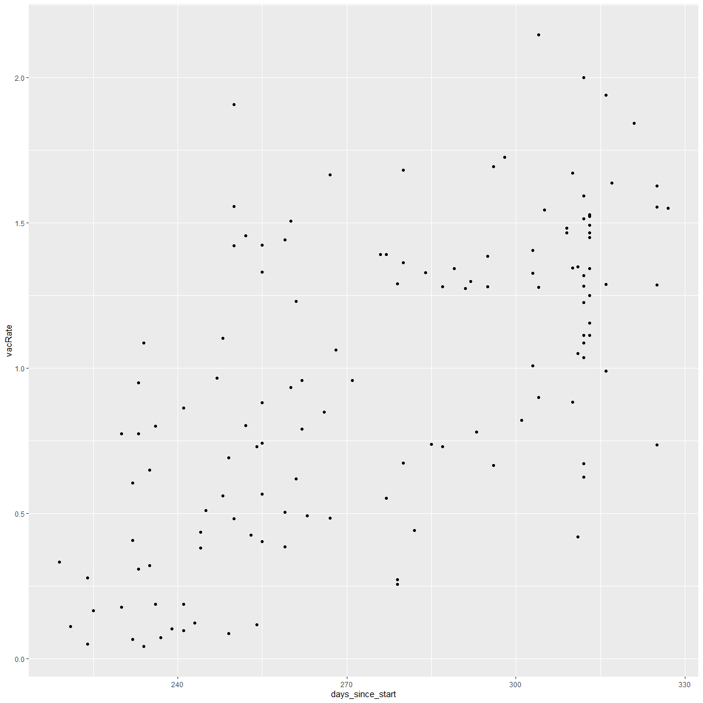

Group project for CPSC-375, Big Data
-
Uses over 100,000 data points and creates a linear model to predict if there are any correlations to vaccination rates to other independent variables.
-
Contains different plots to visualize data from the linear models.
-
Suggests possible correlation between life expectancy at birth to vaccination rates.
Responsibilities:
-
Designed and wrote all code.
-
Analyzed results from table manipulation and data correlations.

Group project for CPSC-362, Software Engineering
-
A rythm game created in Unity.
-
Uses directional keys as input to match audio beats to gain points.
-
Developed the project using agile methodology.
Responsibilities:
-
Acting scrum master for the project, helped manage team workload and directly assisted with coding blocks.
-
Created all of the menu/scenes and managed their transitions.
-
Helped manage all github merges between all the members of the group.
-
Managed audio functionality for different scenes and their transitions.